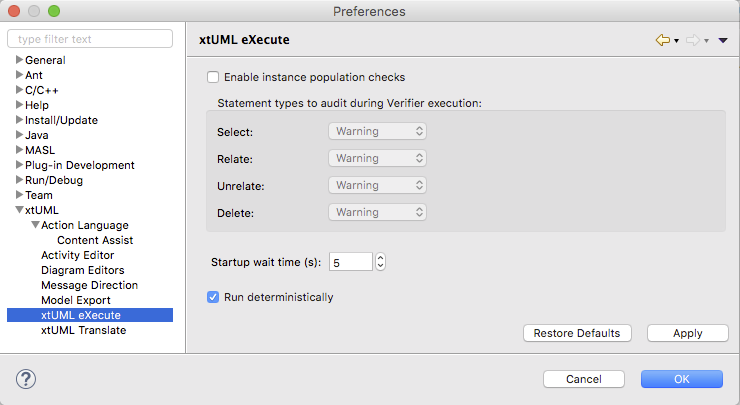

These preferences are control the activity of the Verifier (aka xtUML eXecute)
in the xtUML Debugging perspective.
This preference instructs the Verifier how it should handle runtime checking of
instance populations processed by various OAL statements. When the checks are
enabled, each supported statement will be audited in the specified manner.
The choices are:
Specifies the amount of time (in seconds) to delay beginning execution after the
initial runtime population is created.
Enabling this option runs the entire system in one thread and utilizes simulated
(rather than wall-clock) time. This makes model execution repeatable.
Disabling this option runs each component in its own thread, and allows the user
to decide on the implementation of time used. Thus, execution may differ from
run to run. This mode tests concurrency and can help expose race conditions.
